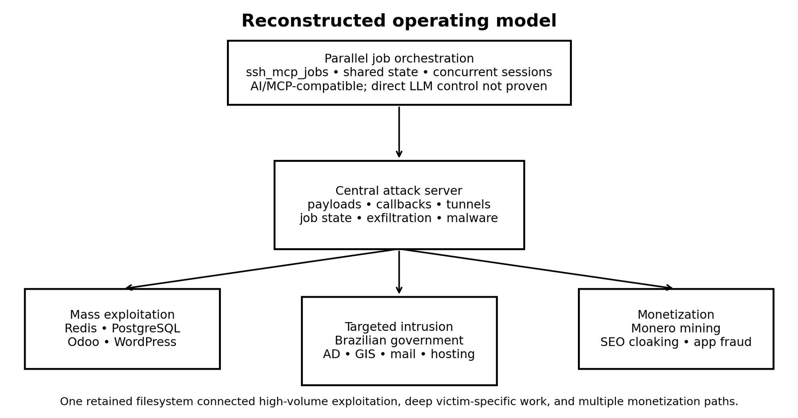
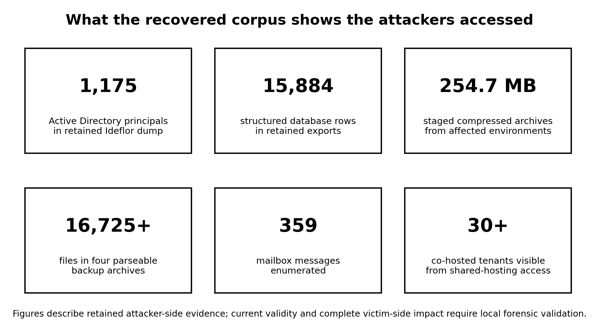
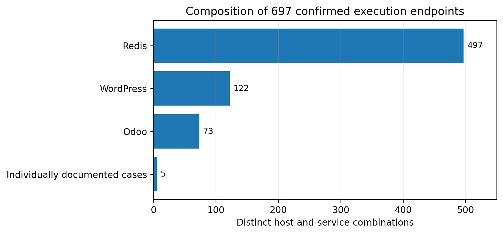
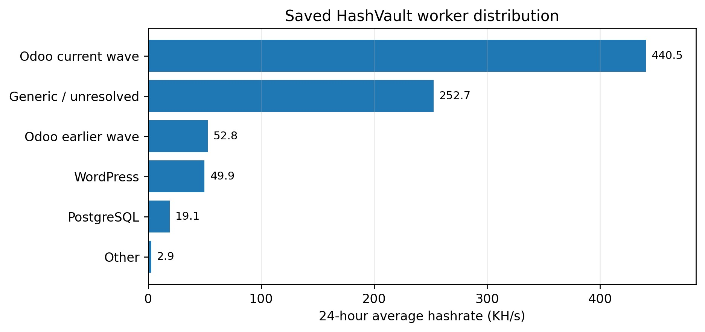
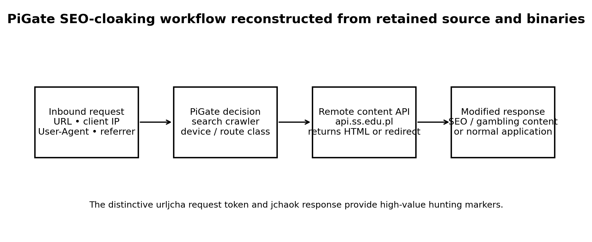

Inside an Exposed C2 Server
Brazilian government compromise, credential theft, mass
exploitation, cryptomining, and SEO malware
TL;DR
Files recovered from an exposed command-and-control server reveal a broad intrusion operation that compromised Brazilian government and public-sector systems while exploiting hundreds of additional internet-facing services.
The corpus documents Active Directory credential theft, database and mailbox access, persistent footholds, highly parallelized AI-compatible orchestration, custom SEO malware, and a shared Monero mining operation.
1. Executive summary
Files recovered from an active command-and-control server expose the working methods of a multi-purpose intrusion operation that combined selective attacks on Brazilian government and public-sector systems with high-volume exploitation of internet-facing services. The retained corpus links target discovery, exploitation, callbacks, reverse tunnels, credential collection, data staging, persistence, malware deployment, cryptomining, and SEO manipulation within one operational environment.
The most serious evidence concerns Brazilian public institutions. It includes a decrypted Active Directory credential dump containing 1,175 domain principals; government GIS and PostGIS credentials, SSH keys, and keystore material; access to municipal and institutional databases; mailbox and shared-hosting access; and successful deployment and health checking of a custom Java SEO implant on a federal application. Retained database exports contain 15,884 structured rows, while six staged archives total approximately 254.7 MB and include application source, configuration, documents, media, and logs.
The operation was also industrialized. A conservative recount identifies confirmed command execution on 697 distinct host-and-service combinations, dominated by Redis, WordPress, and Odoo exploitation. The same Monero wallet was embedded across several deployment frameworks, directly connecting otherwise separate campaigns. Saved pool records show 31 payouts totaling 3.1886 XMR - approximately $979 at the spot price of $307.14 per XMR on 28 July 2026 - representing only the minimum proceeds visible in the retained pool snapshot, not total revenue. [8]
The server also preserved evidence of unusually parallel attack orchestration. A hierarchy named ssh_mcp_jobs contained dozens of concurrent execution sessions, shared state, command output, timestamps, exit status, and cross-session references such as "teammate." This structure is compatible with an AI-agent or Model Context Protocol-style workflow and demonstrates extensive automation, although no retained prompts, model API logs, or MCP protocol records prove that an LLM directly controlled the activity.
Organizations identified in the recovered corpus, and organizations whose telemetry matches the published indicators, should treat these findings as evidence of potential active compromise. Immediate action is required to preserve evidence, isolate affected systems, rotate exposed credentials, remove persistence, assess lateral movement and data exposure, and confirm that attacker access has been eradicated.
2. Source and evidentiary model
The primary evidence is a snapshot of files recovered from 111.90.139.202 on 26 July 2026 while the server permitted unauthenticated retrieval of its operational corpus. The host was not merely a payload repository: retained scripts and logs identify it as the destination for callbacks, reverse shells, Chisel tunnels, exfiltration, miner delivery, and remote-job state. It was hosted in Shinjiru Technology address space in Malaysia and used the internal hostname server199762.
The collection produced 42,812 files totaling approximately 3.59 GB. Because the server remained active and its contents changed during collection, the corpus is an investigative snapshot rather than a forensic disk image. It includes genuine operational material alongside duplicate payloads, public proof-of-concept repositories, scanner output, recursive retrieval artifacts, and laboratory content. Conclusions in this report were therefore based on corroborated command output, payload source, callback records, saved service responses, and cross-campaign infrastructure reuse rather than filenames alone.
| Term | Use in this report |
|---|---|
| Directly evidenced | Explicitly present in retained attacker-side artifacts, such as command output, malware source, callback logs, credential-dump output, or saved service responses. |
| Corroborated / assessed | Supported by independent artifacts, or inferred from multiple observations after plausible alternatives were considered. |
| Attempted / unverified | Delivery or execution was recorded, but the intended result, persistence, or attacker-generated status could not be independently validated. |
| Not established | The available corpus does not support the proposition. |
Impact counts use normalized endpoint keys: a public IP or hostname paired with an exposed service. This removes retries and overlapping exploit methods but does not guarantee a count of unique physical machines.
Aggregate results without host identifiers and scanner-only findings are reported separately or excluded.
Public version
Sensitive credentials, credential hashes, private keys, victim records, mailbox content, and exploit-ready host details are omitted. Findings describe retained attacker-side evidence; affected organizations must validate current impact through their own forensic investigation.
3. C2 infrastructure and operational orchestration
The server connected three operational layers. Broad discovery and scanning produced target sets; deterministic mass-exploitation frameworks applied ordered exploit, deployment, verification, and retry workflows; and parallel remote-job sessions performed adaptive research and post-exploitation against higher-value targets. Shared files, credentials, payloads, callback listeners, and status records allowed work to move between those layers without leaving the server.

Figure 1. Reconstructed operating model from the retained C2 corpus.
Source: CyberCyber Labs analysis of retained scripts, job records, callbacks, and shared filesystem state.
3.1 Highly parallelized and AI-compatible workflow
The ssh_mcp_jobs hierarchy contained top-level jobs and 33 short hexadecimal session directories. Each session could retain commands, standard output, standard error, process identifiers, timestamps, and exit status. Multiple sessions worked against the same target while reading and writing common files, and some records referred to other sessions as "teammates." One SaaS target alone was addressed by 18 sessions and 110 jobs.
This design is consistent with an agentic penetration-testing harness or an MCP-style remote execution system. It may also reflect conventional automation or a human operator managing concurrent shells. The evidence supports centralized, highly parallel orchestration; it does not establish the number of people involved or prove direct use of a particular AI model. Complete-looking OpenAI credentials found in a victim configuration are a separate access-impact finding and are not evidence of operator AI use.
3.2 Mature exploitation lifecycle
- Acquire and fingerprint target corpora using search services, scanners, and product-specific probes.
- Apply an ordered waterfall of exploit methods and record granular outcomes.
- Deploy a miner, webshell, SSH key, cron job, reverse tunnel, or target-specific toolkit.
- Re-read processes, cron, files, or authorized_keys to distinguish successful execution from a write attempt.
- Retry partial failures in later waves and remove competing miners where present.
- Escalate selected government and SaaS targets into adaptive post-exploitation, credential theft, and data collection.
4. Brazilian government targeting
Brazilian government and public-sector systems were not incidental entries in a global scan. The corpus contains organization-specific notes, repeated follow-up, custom exploit chains, internal host discovery, credential attacks, data staging, and persistence tooling. The following cases illustrate the depth of activity without publishing exploit-ready victim details.
4.1 Ideflor Bio: Active Directory credential extraction
A GLPI compromise was developed into internal-domain access and a completed VSS-based secretsdump operation. Retained output contains 1,175 unique domain principals, including 428 machine accounts, 747 human, built-in, service, or other principals, built-in Administrator, krbtgt, and 21 account names marked as administrative.
The dump contains 1,057 distinct NT hashes and proves extraction and decryption of Active Directory credential material. Victim-side telemetry is still required to determine subsequent use and the full duration of access.
4.2 INSA/RNP: staged post-exploitation and domain pivot
A source in Brazilian research and education address space retrieved a chronological toolkit from the C2: local privilege-escalation payloads, GLPI decryptors, Chisel, Impacket and ntlmrelayx components, LDAP and Active Directory spraying tools, an RBCD workflow, and a quiet-persistence script. Delivery and retrieval are directly evidenced; successful privilege escalation, RBCD modification, and final persistence execution are not.
4.3 Shared-hosting compromise and municipal exposure
An authenticated support-chat upload path saved a PHP payload even though the application returned an HTTP 500 error after a failed database insert. The recovered shell executed as an ISPConfig tenant, an attacker SSH key was added, and the operator enumerated more than 30 co-hosted municipal and institutional tenants.
Subsequent material includes hosting configuration, mailbox access, shell-account records, and searches through 359 messages for passwords, administrative panels, SSH, and FTP information.
4.4 Federal application: custom SEO implant
The federal Protocolo Integrado application retrieved the custom PiGate JAR from the C2 during a JBossdeserialization campaign. Later health checks returned the implant's exact jchaok response to the distinctive urljcha request token. Delivery and live implant response are confirmed; sustained public delivery of the intended gambling route was only partially observed.
4.5 Government GIS environments
GeoServer and PostGIS work produced command execution on at least one government GIS target and recovered administrative digests, database credentials and internal hosts, three unique victim SSH keypairs, and JCEKS keystore material. C2 callbacks corroborate exfiltration activity. Several container escape and root-persistence stages were attempted but are not confirmed in the retained evidence.
5. Credentials, data, and access obtained
The corpus is significant not only because systems were exploited, but because it preserves the types of access and data available to the attackers. The retained material could support pass-the-hash activity, service and database access, mailbox compromise, authenticated mail sending, cloud or API use, lateral movement, and durable application or operating-system persistence if the credentials and keys remained valid.

Figure 2. Principal access and data volumes visible in the retained corpus.
Counts are based on retained attacker-side artifacts and do not imply that every record was subsequently used or exfiltrated further.
| Access or data class | Retained evidence and significance |
|---|---|
| Domain credentials | Ideflor Active Directory material for 1,175 principals, including krbtgt and privileged-by-name accounts; separate Kerberos hashes and cracked service credentials were also present. |
| Databases and personal data | Four staged SQL datasets plus municipal SQL-injection exports contain 15,884 structured rows, including identity, contact, employment, education, authentication, session, and authorization data. |
| SSH, GIS, and keystores | Complete victim SSH keypairs, GeoServer administrative material, PostGIS credentials and internal hosts, and JCEKS secret-key evidence. |
| Mail and hosting | A mailbox with 359 enumerated messages, captured government-mail credentials, hosting configuration, shell accounts, panel users, and visibility into more than 30 tenants. |
| Archives and source | Six staged archives total 254.7 MB; four parseable ZIPs contain at least 16,725 files including application source, configuration, documents, media, logs, and database secrets. |
| Cloud and APIs | A valid OCI private key and complete-looking OpenAI, SendGrid, and Infobip credentials were retained. Current validity and successful use were not established. |
The mass PostgreSQL harvester also reported 695 tool-defined LOOT outcomes. Because its driver and per-target output were absent, those statuses cannot be equated with 695 complete database dumps or even 695 distinct hosts. They establish a separate harvesting workflow but not its exact contents.
6. Mass exploitation and Monero mining
The same infrastructure used for targeted public-sector work operated production-style mass frameworks against Redis, PostgreSQL, Odoo, and WordPress. Retained records show ordered exploit methods, parallel workers, granular status values, payload deployment, process and persistence verification, and repeated retry waves. A conservative recount identifies 697 distinct host-and-service combinations with confirmed command execution or equivalent evidence.

Figure 3. Confirmed execution endpoints by campaign family.
The categories form a 697-endpoint union after normalization. They represent host-and-service combinations, not guaranteed unique physical machines.
| Measured outcome | Count | Interpretation |
|---|---|---|
| Confirmed command execution | 697 endpoint keys | 497 Redis, 122 WordPress, 73 Odoo, and five individually documented cases. |
| Verified miner process | 274 endpoint keys | Process or equivalent verification; overlaps with confirmed execution. |
| Durable persistence verified | 114 IP addresses | Later readback or verification, not merely an attempted write. |
| Webshell deployed | 74 endpoint keys | Seventy-three Odoo endpoints and the shared-hosting case; overlaps with execution. |
| Additional PostgreSQL RCE | 123 aggregate statuses | Host identifiers were not retained, preventing global deduplication. |
6.1 One wallet links multiple campaigns
A single Monero wallet was embedded in operator-written deployment frameworks for Redis, PostgreSQL, Odoo, and WordPress. This is more than a revenue indicator: it directly links campaigns aimed at different products to one operational cluster. Installers disguised XMRig under health-monitoring names, established cron persistence, killed competing miners, and retrieved binaries from the C2.
The retained HashVault snapshot records 31 payouts totaling 3.1886 XMR. At the 28 July 2026 spot price of $307.14 per XMR, the payouts were worth approximately $979. [8] This is a point-in-time valuation of the pool-visible payouts only. It excludes unpaid balances, mining through other pools or wallets, subsequent price movement, and any revenue from SEO or other fraud.

Figure 4. HashVault hashrate associated with saved worker identifiers.
Odoo identifiers accounted for the largest attributable share. The generic/unresolved worker may combine several campaigns.
7. PiGate and SeoNet SEO malware
The corpus contains source code, compiled classes, deployable JARs, build artifacts, and installation scripts for PiGate, a custom Java Servlet filter and 404 handler that turns a compromised application into an SEO-cloaking node. It classifies crawlers, referrers, devices, and request paths; queries a remote API; and either injects content, replaces the response, redirects the visitor, or allows the legitimate page to continue.

Figure 5. PiGate request and content-decision flow.
Reconstructed from retained PiGate source, compiled artifacts, deployment scripts, and health-check records.
PiGate's most distinctive public markers are the urljcha request token and exact jchaok response. The code also contacts api.ss.edu.pl and contains logic for Google, Bing, Yahoo, and Baidu crawlers, mobile and desktop device classes, and Portuguese gambling content. On Protocolo Integrado, payload retrieval and the live health response are directly evidenced.
7.1 Cross-platform sibling: SeoNet
SeoNet is a managed .NET component for Microsoft IIS. It shares the remote API, crawler and device classifications, content-decision logic, query conventions, and Chinese-derived vocabulary found in PiGate. The relationship supports a private cross-platform SEO capability rather than an isolated Java implant. SeoNet was staged on the attack server, but the retained HTTP telemetry does not prove successful deployment to a victim.
7.2 Relationship to known SEO-fraud activity
PiGate and SeoNet overlap operationally with Chinese-speaking SEO-fraud ecosystems documented by Cisco Talos, ESET, and Elastic, including the use of authoritative compromised servers, selective content delivery, credential and configuration theft, and IIS or web-application implants. [4][5][6][7] These similarities are useful context but are not sufficiently distinctive to identify this operation as DragonRank, GhostRedirector, TOLLBOOTH, UAT-8099, or another named cluster.
8. Operator context and attribution
Multiple independent artifacts support a Chinese-language operational environment. Operator-associated automation output contains Chinese interface text, and custom malware uses Chinese-derived terms and abbreviations. The distribution of interactive job activity is also broadly consistent with a UTC+8 working schedule.
Together, these signals support describing the operation as Chinese-language with medium-high confidence.
These observations do not establish nationality, physical location, the number of people involved, organizational affiliation, or state sponsorship. UTC+8 covers several jurisdictions, Chinese-language tools circulate internationally, and hosting in Malaysia does not locate the operator. The observed objectives - cryptomining, SEO manipulation, credential theft, data access, and application fraud - are consistent with financially motivated cybercrime. No evidence of ransomware, destructive wiping, DDoS operations, access-sale workflows, or state-directed intelligence requirements was identified.
9. Immediate response priorities
Affected organizations should not test retained credentials or keys against live systems. Response should be coordinated through the relevant security, legal, and operational owners, with evidence preservation preceding destructive remediation where possible.
- Preserve logs, snapshots, cloud audit records, identity telemetry, database logs, mail logs, and application artifacts before rotation or reimaging.
- Isolate affected internet-facing systems and hunt historical connections to the C2, SEO API, callback ports, and listed payload paths.
- Rotate exposed domain, service, database, mail, hosting, API, and SSH credentials; include appropriate krbtgt rotation after Active Directory containment.
- Remove webshells, cron jobs, unauthorized SSH keys, suspicious accounts, SUID helpers, timers, malicious JARs or IIS modules, reverse tunnels, and XMRig.
- Assess lateral movement and data exposure across internal domains, hosting tenants, GIS infrastructure, mail systems, and co-hosted applications.
- Patch and harden the exploited public-facing products, then monitor for re-entry through alternate accounts or surviving persistence.
Priority hunting should focus on historical access to the C2 and SEO API; the urljcha / jchaok markers; reverse tunnels and Chisel; XMRig and hidden health-monitoring artifacts; unauthorized SSH keys, cron jobs, users, services, JARs, IIS modules, and webshells; and evidence that exposed hashes, Kerberos material, database credentials, or mailbox credentials were used.
10. Limitations and conclusion
This report is based on an attacker-side filesystem snapshot and public enrichment, not forensic images from victims or the complete attack server. Endpoint keys do not equal unique physical machines; aggregate PostgreSQL results could not be mapped safely to individual hosts; live SeoNet deployment was not established; and the files do not show whether stolen access or data were sold or used elsewhere.
The corpus nevertheless reveals an operation capable of moving between industrialized internet-wide exploitation and deep, target-specific intrusion. Mass frameworks supplied scale; adaptive sessions pursued valuable targets; a shared wallet tied several exploitation lines together; and PiGate and SeoNet provided a custom monetization capability. Possible AI assistance is noteworthy, but the confirmed risk does not depend on proving it: the records already demonstrate effective parallel automation and substantial access.
Organizations identified in the corpus, and organizations matching the published indicators, should assume that credentials, persistent access, and stolen data may remain operational until disproved by forensic investigation.
Immediate containment, credential rotation, persistence removal, lateral-movement review, and data-impact assessment are required.
Appendix A. Public indicators of compromise
These indicators are intended for defensive hunting and should be evaluated against the July 2026 observation period. Infrastructure may be reallocated and shared provider identifiers can produce false positives. Victim assets, credentials, and private material are intentionally excluded.
A.1 Network and protocol indicators
| Indicator | Type | Role / guidance | Confidence |
|---|---|---|---|
111.90.139.202 | IPv4 | Central attack server during the observation period. Hunt historical connections before making present-day attribution decisions. | High |
api.ss.edu.pl | Domain | Remote content API used by PiGate and SeoNet. Review DNS and HTTP egress. | High |
urljcha | HTTP token | PiGate health-check or control token. | High |
jchaok | HTTP response | Exact PiGate health response. | High |
server199762 | Hostname / key comment | Internal server nickname retained in operator material. | High |
A.2 Malware and tool hashes
| Artifact | SHA-256 |
|---|---|
| PiGate deployment JAR | 83f23cb33e21e7f317c25fa98ecb16e2db2ab2c8b2c54ff7cfa76c 608b0c1d7a |
| PiGate webroot JAR | 8a139d03d44485ae7c7d04477c10a3bf988314e353bf400a66800e 1ba33fbe83 |
| SeoNet IIS/.NET assembly | 5fd7984fe9d2360c9630f4e07654f662bc9300056edf5ce1cfbbab 4f7ecd43cb |
| Redis exp.so | cf4c6ac09be225112faaef95316a137eff30e91c0f5f8e7aaf0a4b cc6c76f477 |
| Redis ldpwn.so | 4bdfd161ed98f7900593821e610f3a3ac084b0f67365f14c09faa7 1e7e6afcc0 |
A.3 Wallet and artifact indicators
| Indicator | Description |
|---|---|
89bsxF3D7pvJLpxnt7EoT5SQDrJqAYE6RFwxDxAW58DASgjhmhusv3 2UN54hBwE1dXPpHLVDzoNRb8PEHg9YNtpsSmbww2Q | Monero wallet embedded across several operator deployment frameworks. |
/var/tmp/.odoo_pg_health | Odoo/PostgreSQL campaign binary or state artifact. |
.odoo_health | Cron or health artifact associated with mining persistence. |
/tmp/.ldpwned | Redis LD_PRELOAD campaign marker. |
/tmp/pwned_ld | Redis LD_PRELOAD campaign marker. |
sysupd | Persistence or disguised account/process name used in target-specific work. |
insa-persist-20260725 | INSA-targeted persistence artifact. |
GLPIPIVOT$ | Computer-account name used in an attempted RBCD workflow. |
Appendix B. ATT&CK mapping, evidence index, and references
B.1 MITRE ATT&CK mapping
The mapping summarizes techniques directly evidenced or strongly supported by the retained corpus. It does not imply that every technique occurred in every affected environment.
| Technique | ID | Evidence in the operation |
|---|---|---|
| Active Scanning: Vulnerability Scanning | T1595.002 | FOFA, nuclei, httpx, Nmap, product confirmation, and large target corpora. |
| Exploit Public-Facing Application | T1190 | GLPI, Redis, PostgreSQL, Odoo, WordPress, GeoServer, JBoss, and application-logic exploitation. |
| Command and Scripting Interpreter | T1059 | Shell, Python, PowerShell, database command execution, and Java deserialization. |
| Exploitation for Privilege Escalation | T1068 | Staged Linux kernel and Windows privilege-escalation tools; success varies by case. |
| Valid Accounts | T1078 | Use of extracted application, hosting, database, mail, and domain credentials. |
| Account Manipulation | T1098 | Local users, SSH keys, server actions, and attempted RBCD computer-account use. |
| Scheduled Task/Job: Cron | T1053.003 | Redis and Linux persistence through cron and scheduled components. |
| Server Software Component: Web Shell | T1505.003 | PHP and other webshell deployment in application and mass campaigns. |
| Server Software Component: IIS Components | T1505.004 | SeoNet IIS/.NET implant staged on the C2. |
| Resource Hijacking: Compute Hijacking | T1496.001 | XMRig deployment and verified Monero mining. |
B.2 External references
[1] Redis, "Security Advisory: CVE-2025-49844," 3 October 2025. https://redis.io/blog/security-advisory-cve-2025-49844/[2] GeoServer, "CVE-2024-36401 Remote Code Execution vulnerability," 12 September 2024.
https://geoserver.org/vulnerability/2024/09/12/cve-2024-36401.html
[3] Red Hat, "CVE-2017-12149. " https://access.redhat.com/security/cve/cve-2017-12149
[4] Cisco Talos, "DragonRank, a Chinese-speaking SEO manipulator service provider," 10 September 2024.
https://blog.talosintelligence.com/dragon-rank-seo-poisoning/
[5] ESET Research, "GhostRedirector poisons Windows servers," 4 September 2025. https://www.welivesecurity.com/en/eset-research/ghostredirector-poisons-windows-servers-backdoors-side-potatoes/
[6] Elastic Security Labs, "TOLLBOOTH: What's yours, IIS mine," 22 October 2025. https://www.elastic.co/security-labs/tollbooth [7] Cisco Talos, "UAT-8099: Chinese-speaking cybercrime group targets high-value IIS for SEO fraud," 2 October 2025.
https://blog.talosintelligence.com/uat-8099-chinese-speaking-cybercrime-group-seo-fraud/
[8] CoinGecko, "Monero Price: XMR/USD," spot price retrieved 28 July 2026. https://www.coingecko.com/en/coins/monero [9] MITRE ATT&CK, Enterprise techniques. https://attack.mitre.org/techniques/enterprise/
About the author
Noam Rotem is a cybersecurity researcher and technology executive. He writes on exposed infrastructure, cybercrime operations, threat intelligence, and the practical analysis of attacker systems. This report was prepared for CyberCyber Labs.
CyberCyber Labs: cybercyberlabs.com